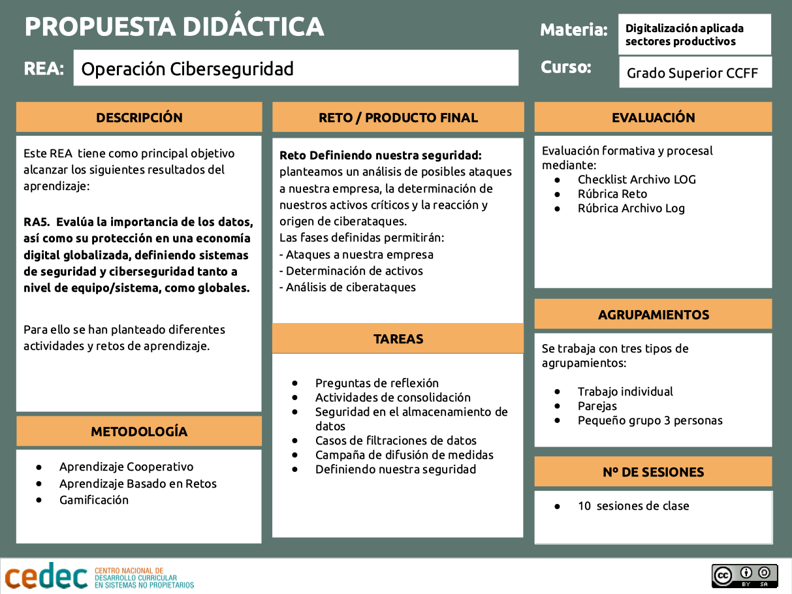

Propuesta didáctica
Este recurso educativo abierto forma parte de uno más amplio que corresponde a un curso del módulo profesional de Digitalizació aplicada als sectors productius, para ciclos formativos de grado superior. Se organiza en cinco operaciones que incluyen los diferentes resultados de aprendizaje del módulo, y que permiten ir alcanzando diferentes niveles de formación en digitalización hasta alcanzar la credencial completa que nos permite obtener el certificado de experto o experta de digitalización.
En esta tercera operación nos adentramos en lo que conlleva proteger la información de nuestra empresa ante posibles ciberataques, definiendo qué debemos proteger, y qué estrategia de defensa, detección y reacción deben definir las empresas normalmente plasmándolo en su Plan Director de Seguridad.
